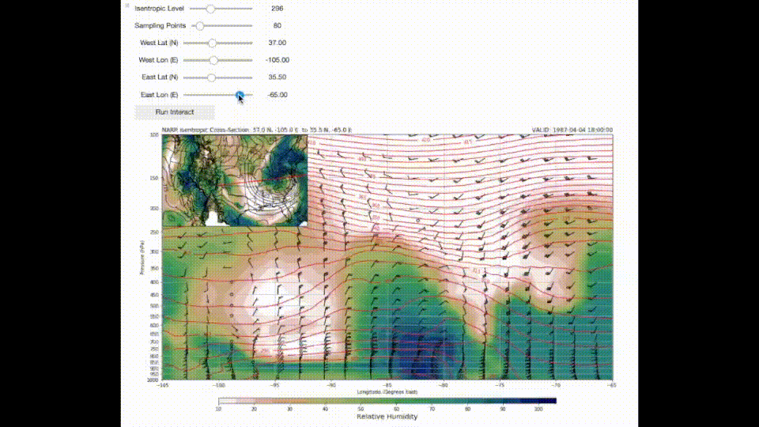

Note
Click here to download the full example code
Isentropic Cross-section¶
Make an isentropic cross section with MetPy
With the function metpy.calc.extract_cross_section, data can be extracted from 3-dimensional input along a specified line and plotted in a 2-dimensional cross-section.
import cartopy.crs as ccrs
import cartopy.feature as cfeature
import ipywidgets as widgets
from ipywidgets import interact_manual
import matplotlib.pyplot as plt
import metpy.calc as mcalc
from metpy.units import units
from netCDF4 import num2date
import numpy as np
from siphon.ncss import NCSS
Getting the data
In this example, NARR reanalysis data for 18 UTC 04 April 1987 from the National Centers for Environmental Information (https://nomads.ncdc.noaa.gov) will be used.
# Link to NetCDF subset service for NAM analysis data
ncss = NCSS('https://nomads.ncdc.noaa.gov/thredds/ncss/grid/narr-a/198704/19870404/'
'narr-a_221_19870404_1800_000.grb')
# Bring in needed data
modeldata = ncss.query().all_times()
modeldata.variables('Geopotential_height',
'u_wind',
'v_wind',
'Temperature',
'Specific_humidity').add_lonlat()
# Set the lat/lon box for the data you want to pull in.
# lonlat_box(north_lat,south_lat,east_lon,west_lon)
modeldata.lonlat_box(-140, -60, 16, 60)
# Actually getting the data
data = ncss.get_data(modeldata)
print(list(data.variables))
Out:
['v_wind', 'time', 'isobaric', 'y', 'x', 'Lambert_Conformal', 'lat', 'lon', 'Temperature', 'Geopotential_height', 'Specific_humidity', 'u_wind']
We will reduce the dimensionality of the data as it is pulled in to remove an empty time dimension. Additionally, units are required for input data, so the proper units will also be attached.
# Assign data to variable names
dtime = data.variables['Geopotential_height'].dimensions[0]
dlev = data.variables['Geopotential_height'].dimensions[1]
lat = data.variables['lat'][:]
lon = data.variables['lon'][:]
lev = data.variables[dlev][:] * units(data.variables[dlev].units)
times = data.variables[dtime]
vtimes = num2date(times[:], times.units)
temps = data.variables['Temperature']
tmp = temps[0, :] * units.kelvin
uwnd = data.variables['u_wind'][0, :] * units(data.variables['u_wind'].units)
vwnd = data.variables['v_wind'][0, :] * units(data.variables['v_wind'].units)
hgt = data.variables['Geopotential_height'][0, :] * units.meter
spech = (data.variables['Specific_humidity'][0, :] *
units(data.variables['Specific_humidity'].units))
Create the coordinate system and projection for plotting the inset map
crs = ccrs.LambertConformal(central_longitude=-100.0, central_latitude=45.0)
tlatlons = crs.transform_points(ccrs.PlateCarree(), lon, lat)
tlons = tlatlons[:, :, 0]
tlats = tlatlons[:, :, 1]
Get data to plot state and province boundaries
states_provinces = cfeature.NaturalEarthFeature(category='cultural',
name='admin_1_states_provinces_lakes',
scale='50m',
facecolor='none')
Define a 2-D lat/lon index function to find the nearest grid point to a specified coordinate
def lat_lon_2d_index(y, x, lat1, lon1):
"""Calculate the index values of the grid point nearest a given lat/lon point.
This function calculates the distance from a desired lat/lon point
to each element of a 2D array of lat/lon values, typically from model output,
and determines the index value corresponding to the nearest lat/lon grid point.
y = latitude array
x = longitude array
lon1 = longitude point (signle value)
lat1 = latitude point (single value)
Returns the index value for nearest lat/lon point on grid
Equations for variable distiance between longitudes from
http://andrew.hedges.name/experiments/haversine/, code by Kevin Goebbert.
"""
r = 6373. * 1000. # Earth's Radius in meters
rad = np.pi / 180.
x1 = np.ones(x.shape) * lon1
y1 = np.ones(y.shape) * lat1
dlon = np.abs(x - x1)
dlat = np.abs(y - y1)
a = (np.sin(rad * dlat / 2.))**2 + (np.cos(rad * y1) * np.cos(rad * y) *
(np.sin(rad * dlon / 2.))**2)
c = 2 * np.arctan2(np.sqrt(a), np.sqrt(1 - a))
d = r * c
return np.unravel_index(d.argmin(), d.shape)
Insentropic Cross Section
With the projection set up, we will define the endpoints, extract the cross-sectional data, and plot with an inset map.
def cross_section(isentlev, num, left_lat, left_lon, right_lat, right_lon):
"""Plot an isentropic cross-section."""
# get the coordinates of the endpoints for the cross-section
left_coord = np.array((float(left_lat), float(left_lon)))
right_coord = np.array((float(right_lat), float(right_lon)))
# Calculate data for the inset isentropic map
isent_anal = mcalc.isentropic_interpolation(float(isentlev) * units.kelvin, lev, tmp,
spech, tmpk_out=True)
isentprs = isent_anal[0]
isenttmp = isent_anal[1]
isentspech = isent_anal[2]
isentrh = mcalc.relative_humidity_from_specific_humidity(isentspech, isenttmp, isentprs)
# Find index values for the cross section slice
iright = lat_lon_2d_index(lat, lon, right_coord[0], right_coord[1])
ileft = lat_lon_2d_index(lat, lon, left_coord[0], left_coord[1])
# Get the cross-section slice data
cross_data = mcalc.extract_cross_section(ileft, iright, lat, lon, tmp, uwnd, vwnd, spech,
num=num)
cross_lat = cross_data[0]
cross_lon = cross_data[1]
cross_t = cross_data[2]
cross_u = cross_data[3]
cross_v = cross_data[4]
cross_spech = cross_data[5]
# Calculate theta and RH on the cross-section
cross_theta = mcalc.potential_temperature(lev[:, np.newaxis], cross_t)
cross_rh = mcalc.relative_humidity_from_specific_humidity(cross_spech, cross_t,
lev[:, np.newaxis])
# Create figure for ploting
fig = plt.figure(1, figsize=(17., 12.))
# Plot the cross section
ax1 = plt.axes()
ax1.set_yscale('symlog')
ax1.grid()
cint = np.arange(250, 450, 5)
# Determine whether to label x-axis with lat or lon values
if np.abs(left_lon - right_lon) > np.abs(left_lat - right_lat):
cs = ax1.contour(cross_lon, lev[::-1], cross_theta[::-1, :], cint, colors='tab:red')
cf = ax1.contourf(cross_lon, lev[::-1], cross_rh[::-1, :], range(10, 106, 5),
cmap=plt.cm.gist_earth_r)
ax1.barbs(cross_lon[4::4], lev, cross_u[:, 4::4], cross_v[:, 4::4], length=6)
plt.xlabel('Longitude (Degrees East)')
else:
cs = ax1.contour(cross_lat[::-1], lev[::-1], cross_theta[::-1, ::-1], cint,
colors='tab:red')
cf = ax1.contourf(cross_lat[::-1], lev[::-1], cross_rh[::-1, ::-1], range(10, 106, 5),
cmap=plt.cm.gist_earth_r)
ax1.barbs(cross_lat[::-4], lev, cross_u[:, ::-4], cross_v[:, ::-4], length=6)
plt.xlim(cross_lat[0], cross_lat[-1])
plt.xlabel('Latitude (Degrees North)')
# Label the cross section axes
plt.clabel(cs, fontsize=10, inline=1, inline_spacing=7,
fmt='%i', rightside_up=True, use_clabeltext=True)
cb = plt.colorbar(cf, orientation='horizontal', extend=max, aspect=65, shrink=0.75,
pad=0.06, extendrect='True')
cb.set_label('Relative Humidity', size='x-large')
plt.ylabel('Pressure (hPa)')
ax1.set_yticklabels(np.arange(1000, 50, -50))
plt.ylim(lev[0], lev[-1])
plt.yticks(np.arange(1000, 50, -50))
# Add a title
plt.title(('NARR Isentropic Cross-Section: ' + str(left_coord[0]) + ' N, ' +
str(left_coord[1]) + ' E to ' + str(right_coord[0]) + ' N, ' +
str(right_coord[1]) + ' E'), loc='left')
plt.title('VALID: {:s}'.format(str(vtimes[0])), loc='right')
# Add Inset Map
ax2 = fig.add_axes([0.125, 0.643, 0.25, 0.25], projection=crs)
# Coordinates to limit map area
bounds = [(-122., -75., 25., 50.)]
# Limit extent of inset map
ax2.set_extent(*bounds, crs=ccrs.PlateCarree())
ax2.coastlines('50m', edgecolor='black', linewidth=0.75)
ax2.add_feature(states_provinces, edgecolor='black', linewidth=0.5)
# Plot the surface
clevisent = np.arange(0, 1000, 25)
cs = ax2.contour(tlons, tlats, isentprs[0, :, :], clevisent,
colors='k', linewidths=1.0, linestyles='solid')
plt.clabel(cs, fontsize=10, inline=1, inline_spacing=7,
fmt='%i', rightside_up=True, use_clabeltext=True)
# Plot RH
cf = ax2.contourf(tlons, tlats, isentrh[0, :, :], range(10, 106, 5),
cmap=plt.cm.gist_earth_r)
# Convert endpoints of cross-section line
left = crs.transform_point(left_coord[1], left_coord[0], ccrs.PlateCarree())
right = crs.transform_point(right_coord[1], right_coord[0], ccrs.PlateCarree())
# Plot the cross section line
plt.plot([left[0], right[0]], [left[1], right[1]], color='r')
plt.show()
# Finally, call the plotting function and show the map interactively
interact_manual(cross_section,
isentlev=widgets.IntSlider(min=280, max=330, step=1, value=296,
description='Isentropic Level'),
num=widgets.IntSlider(min=20, max=500, step=10, value=80,
description='Sampling Points'),
left_lat=widgets.FloatSlider(min=0., max=90., step=.5, value=37.,
description='West Lat (N)'),
left_lon=widgets.FloatSlider(min=-150, max=-45, step=0.5, value=-105.,
description='West Lon (E)'),
right_lat=widgets.FloatSlider(min=0., max=90., step=.5, value=35.5,
description='East Lat (N)'),
right_lon=widgets.FloatSlider(min=-150, max=-45, step=.5, value=-65.,
description='East Lon (E)'))
Out:
interactive(children=(IntSlider(value=296, description='Isentropic Level', max=330, min=280), IntSlider(value=80, description='Sampling Points', max=500, min=20, step=10), FloatSlider(value=37.0, description='West Lat (N)', max=90.0, step=0.5), FloatSlider(value=-105.0, description='West Lon (E)', max=-45.0, min=-150.0, step=0.5), FloatSlider(value=35.5, description='East Lat (N)', max=90.0, step=0.5), FloatSlider(value=-65.0, description='East Lon (E)', max=-45.0, min=-150.0, step=0.5), Button(description='Run Interact', style=ButtonStyle()), Output()), _dom_classes=('widget-interact',))
Total running time of the script: ( 0 minutes 3.677 seconds)